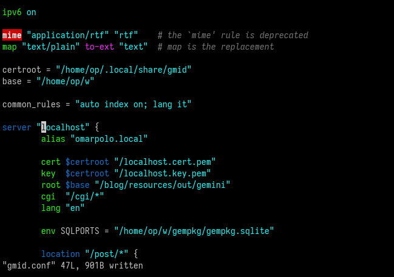

This directory is for additional contributed files which may be useful.
Contents:
contrib/Dockerfile
is a simple Dockerfile. The resulting image is a classic alpine
linux image with a statically linked gmid installed as
/bin/gmid.
To build the image:
# docker build -f contrib/Dockerfile -t gmid .
and then run it with something along the lines of:
# docker run --rm -it -p 1965:1965 \
-v gmid.conf:/etc/gmid.conf:ro \
-v path/to/keys:/tls:ro \
-v /var/gemini:/var/gemini:ro \
gmid -c /etc/gmid.conf
contrib/gencert is a simple script to generate self-signed certificates.
contrib/gmid
is a sample service file for OpenBSD rc(8).
To install it:
# cp contrib/gmid /etc/rc.d
then the usual
rcctl [start|stop|enable|restart] gmid
are available.
contrib/gmid.service is a simple service file for systemd. To install it:
# cp contrib/gmid.service /lib/systemd/system/gmid.service
then the usual
systemctl [status|start|enable|stop] gmid
commands can be used to manage the server.
Some things to keep in mind:
ExecStart path may depend on the installation.
gmid user needs to be created for e.g. with:
# useradd --system --no-create-home -s /bin/nologin -c "gmid Gemini server" gmid
journalctl(1):
# journalctl -t gmid
contrib/renew-certs is a script meant to be run in a crontab that watch for certificate expiration. It can optionally renew the certs and restart gmid too.
Read the documentation with: perldoc renew-certs
contrib/vim
contains a syntax highlighting for vim. To install it, just
copy the files to ~/.vim
or /usr/share/vim/vimfiles, e.g.
$ mkdir -p ~/.vim $ cp -R contrib/vim/* ~/.vim/
To enable Syntastic checker, add to your vimrc:
let g:syntastic_gmid_checkers = ['gmid']
The end result is something like this:
